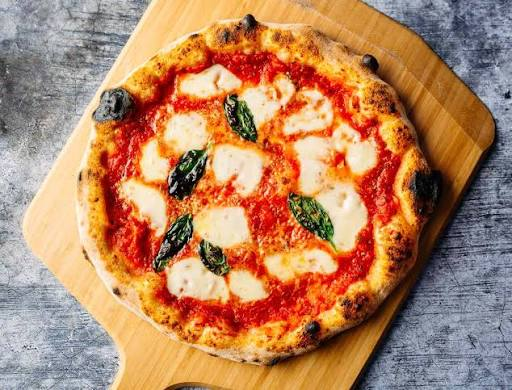

Back to Home
Margherita Pizza Recipe

Description
Margherita pizza is a traditional Italian dish made with a crispy dough base, tomato sauce, fresh mozzarella cheese and basil leaves. It is simple but full of flavour. Baked until golden and melted, this delicious pizza is perfect for sharing with family and friends during lunch or dinner.
Ingredients:
- 300gPizza Dough
- 150g Tomato Sauce
- 200g Fresh Mozzarella Cheese
- Fresh Basil Leaves
- 1 tsp Olive Oil
- Salt
- A little flour for rolling
Instructions:
- Prepare the dough: Roll out the pizza dough on a floured surface to your desired thickness.
- Preheat the oven: Preheat your oven to 220°C (452°F).
- Add toppings: Spread the tomato sauce evenly over the dough. Tear the mozzarella cheese into small pieces and distribute them over the sauce. Add the fresh basil leaves.
- Bake: Place the pizza in the preheated oven and bake for 10-15 minutes until the crust is golden and the cheese is bubbly.
- Serve: Let it cool for a few minutes before slicing and add fresh Basil leaves before serving. Enjoy! 🍕